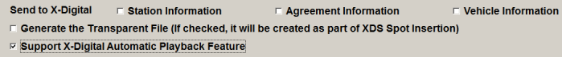
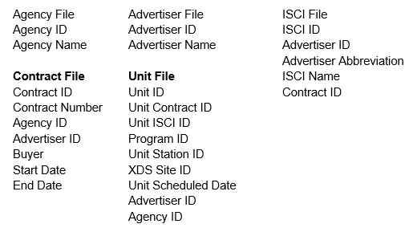

Affiliate System Setup
This section covers additional setup steps that must be performed on the Affiliate System.
X-Digital Station ID
The Station ID is what X-Digital uses to identify the Affiliate’s receiver. This code must match exactly to what is in the X-Digital System.
X-Digital will have provided you with a list of X-Digital Station IDs that need to be entered on the Agreement or Station level. Normally, when generating the X-Digital export, the Counterpoint Affiliate system will first attempt to use the X-Digital Station ID defined on the Agreement. If there is no X-Digital Station ID on the Agreement, it will next attempt to get the X-Digital Station ID from the Stations screen Interface tab. However, it is possible to add a setting (ReceiverIDSource, described above) to the XML.ini that allows you to specify where to get the Site ID from. The available options are:
A = use the Site ID defined on the agreement
B = use the agreement Site ID first if it exists, if not, use the Station Site ID
S = use the Station Site ID only
N = Don't send the Site ID
Affiliate Agreement Screen
Delivery Tab
To enable the X-Digital export for an agreement, go to the Delivery tab and check “X-Digital-Break” or “X-Digital-ISCI” in the Audio Delivery Service area.
When selecting “X-Digital-ISCI” or “X-Digital-Break”, the following additional options will become available:
- Voice-Tracked: When this is set to Yes, the station will insert the host’s voice track and spots into their programming. These spots do not get exported to X-Digital or generate an X-Digital autorization export. If exporting spots via X-Digital, set this to “No”.
- X-Digital Station ID: Enter the station’s receiver ID in this field (if needed).
If you use #Air Plays to increase the number of spots aired, X-Digital agreements will only have spots sent once, regardless of the #Air Plays defined.
Note: for multicast agreements, check on the X-Digital audio delivery checkbox for both agreements, and define the X-Digital Station ID for one. Under this configuration, the data for only one station in the multicast group will be exported, and in the case of the X-Digital import, which imports airing information directly from X-Digital and updates it on the Counterpoint Affidavit website, the data from one station will be used to post both stations. If a Station ID is defined for both stations, the same content will be sent to X-Digital twice, separately for each station, and posted twice (in the case of the X-Digital import), which will not cause any harm, but it's not necessary to set up multicast agreements like that.
X-Digital – Treat “Not Carried” as “Aired”
On version 7.1 and above, there’s an additional checkbox labeled “Treat ‘Not Carried’ the same as ‘Aired’”, to the right of the Audio Delivery Service section.
When checked on, spots from a pledge marked as “not carried” will be exported to X-Digital during the X-Digital export process as if the pledge was marked as “aired”. When not checked on, then “not carried” pledges will be bypassed like before. new option applies to all three X-Digital avail forms: Hour/Break, Hour/Break/Position, and ISCI. It also applies to exports run for “all spots” or for “regional only”. This setting only affects the X-Digital export however, so spots from “not carried” pledges will still not be sent to the web through the CSI Electronic Affidavit export, or other web spot exports.
Stations screen – Interface Tab
On the Stations screen>Interface tab, check on the “X-Digital” option in the “Used for” section.
In addition, if the X-Digital Station IDs provided to you were meant to be used on the Station level, enter them in the XDS Station ID field on the Interface tab.
Serial #1 and Serial #2 are not used by X-Digital.
Stations screen – Personnel Tab
The contact sent to X-Digital for the station is the first contact that has the 'Aff E-mail' check mark in the station/personnel form. If there is no name with the Aff-Email indicator, the first name in the personnel list will be used.
User Options Screen
Setup Users to receive Alerts that Logs have been generated in Traffic and are ready to be exported in the User Options -> Restrictions screen, by turning the following Alert fields green: Export Spots, Export ISCI, Traffic Reprint Logs/CPs.
Affiliate System Site Options
Additional X-Digital options are available in the Affiliate Site Options screen.
If using the X-Digital playback feature. The following must be checked: "Support X-Digital Automatic Playback feature".

Send to X- Digital Site Options Questions
- In addition to the X-Digital spot information that gets sent as part of the X-Digital export, the Station Information, Agreement Information and Vehicle Information checkboxes allow you to upload Station Information, Agreement Information and Vehicle information during the regular X-Digital export process.
- When using any or all of these options, whenever there is an update made to the Station, Agreement, or Vehicle Information, that item will be flagged and uploaded to X-Digital during the next X-Digital export that is performed
- If you leave these boxes unchecked, no Station, Agreement, or Vehicle information will be sent (aside from the X-Digital spot information that gets sent normally as part of the X-Digital export)
- The Station Information checkbox must be checked to allow station information to be exported. The Vantive section of the XML.ini must also be defined to use this feature for the ISCI (Cumulus) export method.
- Agreement Information: This option sends agreement information (also sometimes referred to as Authorization Information) for by Break and by ISCI avail form vehicles. The Vantive section is required on the XML.ini for the ISCI avail form for vehicles for which agreement information must be exported. For the ISCI avail form, the information sent differs slightly for Non-Sports Vehicles and Sport Vehicles, as shown below.
ISCI avail form: Non-Sports Vehicle example:
<NewDataSet>
<SIS_CLEARANCE_VW>
<ClearanceId>4</ClearanceId>
<ClearanceStartDate>12/6/2014</ClearanceStartDate>
<ClearanceEndDate>12/31/2069</ClearanceEndDate>
<SiteId>6644</SiteId>
<NetworkId>777</NetworkId>
<Status>active</Status>
</SIS_CLEARANCE_VW>
</NewDataSet>
ISCI avail form: Sports Vehicle example:
<NewDataSet>
<SIS_CLEARANCE_VW>
<ClearanceId>456693942</ClearanceId>
<ClearanceStartDate>12/25/2014</ClearanceStartDate>
<ClearanceEndDate>12/26/2014 06:00:00</ClearanceEndDate>
<SiteId>10002</SiteId>
<NetworkId>889</NetworkId>
<Status>active</Status>
<ProgramCode>Test</ProgramCode>
</SIS_CLEARANCE_VW>
</NewDataSet>
By Break avail form example:
<Authorization>
<AuthorizationId>1234</AuthorizationId>
<AuthorizationTestDate></AuthorizationTestDate>
<AuthorizationStartDate>11/26/2012</AuthorizationStartDate>
<AuthorizationEndDate>6/23/2013</AuthorizationEndDate>
<SiteId>998</SiteId>
<ProgramCode>Test</ProgramCode>
<ProgramName>TestVehicle</ProgramName>
<Rights>All</Rights>
</Authorization>
Note: For sports vehicles using the ISCI avail form, the Clearance ID is a unique number generated during the export process. The clearance end date is always the event date +1 day, followed by 6am. This ensures all spots crossing midnight are covered. The Program ID Code comes from the Event Schedule defined in the Programming screen (If using the ISCI method, the Program ID field will be enabled in the Programming>Event Schedule screen).
- Vehicle Information: This setting can only be used when the following conditions are met:
- Using the Cumulus head end
- Using the ISCI Avail Method
- Have a vehicle ID defined greater than 0
- Have a valid LogFile Path in the XML.INI
- The vehicles must be selected on the X-Digital vehicle list
- Generate the Transparent File: Creates CSV Transparency files during the Spot Insertion export process
- When checked, the system produces 9 CSV files listing information on airing spots, which can be used externally. The different files are: Advertisers, Agencies, Contracts, DMAs, ISCIs, Programs, Station Groups, Stations, and Units. This option is only applicable to the X-Digital “by break” avail form
- If the XDS Merge feature is being used, the Programs file will list the name of the Child Vehicle (The vehicle with ‘Merge’ defined as its XDS Program ID), along with the Parent Vehicle’s name.
- The file naming convention is “Transparency_name_GenerationDate.CSV” (with the name being Advertisers, Agencies, etc., and the generation date being the start date of the export YY_MM_DD), resulting in as an example: Transparency_Advertiser_13_05_03.CSV
- If you regenerate the file, the additional information will be appended to the original file
- This file will include all the spots airing on the selected vehicles for the exported date span. The transparency file will output the same information whether the X-Digital export is run for all spots or regional only
- The Feed date is used for the Unit Scheduled Date
Nine files are created. For each spot, the following information will appear:
